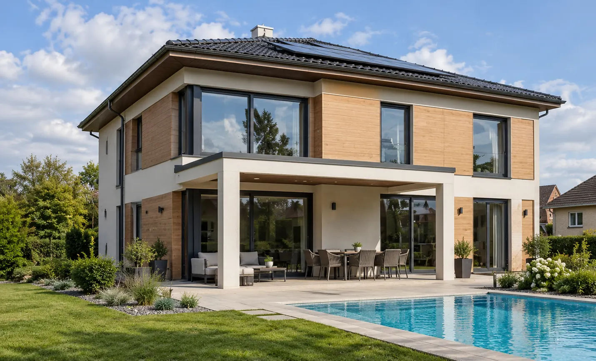
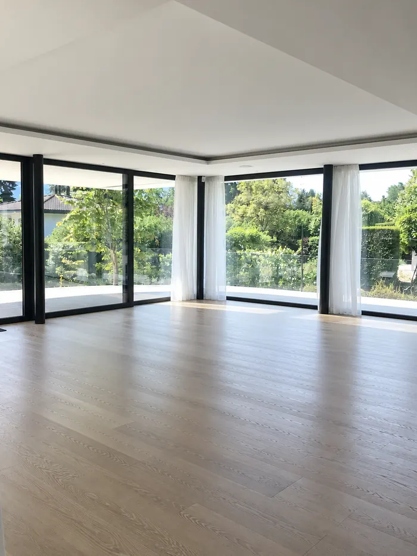
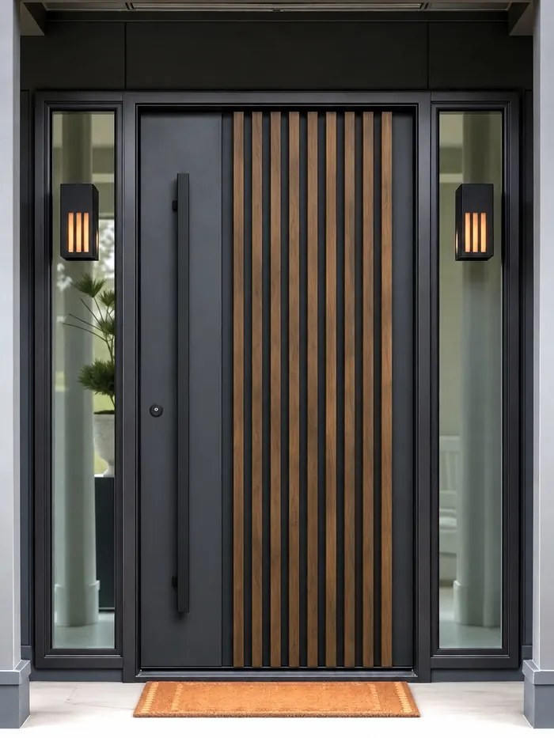
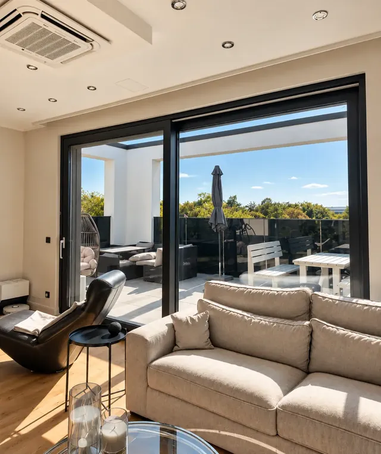
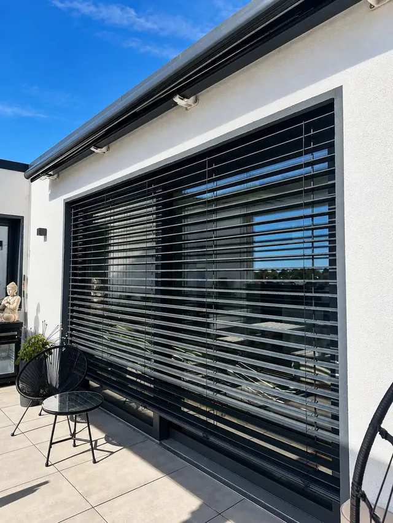
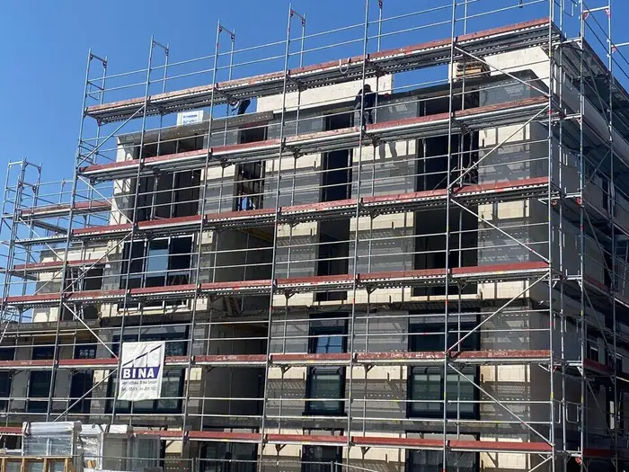

Neue Fenster aus einer Hand: mit Förderantrag und festem Ansprechpartner
Von der Beratung über das Aufmaß bis zum Einbau: ein Vertrag, ein Ansprechpartner. Beratung und Aufmaß sind kostenlos. Um den BAFA-Förderantrag kümmern wir uns mit Ihrer Vollmacht.
Unverbindlich – wir melden uns innerhalb von 24 Stunden.

- Ein Vertragspartner für allesBeratung, Aufmaß, Lieferung und Einbau in einem Vertrag
- Förderantrag inklusive*Den BAFA-Antrag stellen wir mit Ihrer Vollmacht
- Vertrag gilt erst mit FörderzusageOhne Bewilligung entsteht Ihnen keine Verpflichtung
- Fenster mit DatenblattUw-Wert, Schallschutz und Einbruchschutz schwarz auf weiß
* Wir übernehmen die Antragstellung mit Ihrer Vollmacht. Der Zuschuss wird vom BAFA gewährt; ein Anspruch besteht nur bei Erfüllung der Förderbedingungen. Stand: Oktober 2026.
Was wir für Ihr Haus liefern und einbauen
Fenster, Haustüren und Sonnenschutz aus europäischer Fertigung. Wir beraten Sie, welche Ausführung zu Ihrem Haus und Ihrem Budget passt.

Fenster
Kunststoff, Aluminium und Holz – auf Wunsch einbruchhemmend nach RC2.
Fenster ansehen →
Haustüren
Aluminium, Kunststoff und Holz, mit Mehrfachverriegelung.
Haustüren ansehen →
Hebe-Schiebeelemente
Große Glasflächen zur Terrasse, leichtgängig zu bedienen.
Elemente ansehen →
Rollläden & Raffstore
Sonnen-, Sicht- und Wärmeschutz, manuell oder per App.
Sonnenschutz ansehen →Außerdem: Sicherheitsfenster, Sicherheitstüren und Garagentore · Alle Produkte im Überblick
Beispiel: Bei 20.000 € förderfähigen Kosten sind das 3.000 € Zuschuss.
Förderantrag inklusive*: Wir planen den Zuschuss von Anfang an mit
Ob die Förderung fließt, entscheidet sich oft an der Reihenfolge – nicht am Fenster. Deshalb gehen wir sie mit Ihnen gemeinsam durch, bevor etwas bestellt wird.
- Angebot & Aufmaßmit allen Werten, die der Antrag braucht
- Antrag vor Auftragder Vertrag gilt erst ab Bewilligung – Sie gehen nicht in Vorleistung
- Einbau & AuszahlungNachweise und Fristen behalten wir im Blick
Mit individuellem Sanierungsfahrplan (iSFP) sind 5 % mehr möglich – seit dem 21. Juli 2026 allerdings nur noch für den Teil der Kosten oberhalb des Rahmens ohne iSFP, beim Einfamilienhaus also oberhalb von 30.000 €. Bei einem typischen Fenstertausch bleibt es deshalb meist bei 15 %.
Wohnen Sie in Hannover, Laatzen, Langenhagen, Seelze, Hemmingen oder Ronnenberg, kann zusätzlich ein Zuschuss von proKlima infrage kommen. Ob er im Einzelfall gilt und sich mit der BAFA-Förderung verbinden lässt, prüfen wir gemeinsam mit Ihnen.
Alles zur Förderung* Wir übernehmen die Antragstellung mit Ihrer Vollmacht. Der Zuschuss wird vom BAFA gewährt; ein Anspruch besteht nur bei Erfüllung der Förderbedingungen. Stand: Oktober 2026.
In 6 Schritten zu neuen Fenstern
Anfrage
Sie schreiben uns über das Formular oder rufen an. Wir melden uns innerhalb von 24 Stunden und vereinbaren einen Termin bei Ihnen.
Kostenlose Beratung und Aufmaß
Wir sehen uns Ihr Haus vor Ort an, klären Ihre Wünsche und messen jedes Element genau auf.
Angebot mit Förder-Rechnung
Zwei Werktage nach dem Aufmaß erhalten Sie ein Komplettangebot inklusive Montage und Entsorgung der Altelemente – und sehen, welcher Zuschuss möglich ist.
Vertrag mit Förderbedingung
Der Vertrag wird erst wirksam, wenn der Zuschuss bewilligt ist. Den Antrag stellen wir mit Ihrer Vollmacht, gemeinsam mit einem Energieeffizienz-Experten.
Bestellung, Lieferung, Einbau
Bestellt wird erst nach der Förderzusage. Fertigung: Kunststoff ca. 2, Aluminium ca. 4 Wochen. Den Einbau übernimmt ein Fachbetrieb, den wir beauftragen und bezahlen.
Abnahme und Nachweis
Nach der gemeinsamen Abnahme reichen wir die Nachweise für die Förderung fristgerecht ein. Ihr Ansprechpartner bleibt derselbe.
Projekte aus der Region Hannover
Wir zeigen nicht nur fertige Fassaden, sondern auch die Baustellen dahinter – vom Aushub bis zur letzten Fuge.

Vom Grundstück bis zur Bauleitung
Seit über 15 Jahren begleiten wir komplette Bauvorhaben. Für Ihre Fenster heißt das: Wir sehen nicht nur das Element, sondern auch die Wand, in der es sitzt. Und für Vermieter, Hausverwaltungen und Kapitalanleger planen wir auch ganze Häuser mit vielen Einheiten.
- Projektentwicklung & BauplanungGrundstück, Entwurf, Statik und Genehmigung
- Neubau & BauleitungGewerke, Termine und Kosten im Blick
- Sanierung & ModernisierungBestandsaufnahme bis Ausführung
- Immobilien einschätzenWas Ihr Objekt heute wert ist
Was Sie von uns erwarten können
Ein Ansprechpartner statt vieler
Wir beauftragen und bezahlen den Einbau selbst. Sie haben nur einen Vertragspartner.
Förderantrag ohne Papierkrieg
Sie unterschreiben eine Vollmacht, wir kümmern uns mit einem Energieberater um den Antrag.*
Kein Risiko vor der Zusage
Der Vertrag wird erst wirksam, wenn die Förderzusage vorliegt. Kommt sie nicht, entsteht Ihnen keine Verpflichtung.
Transparente Qualität
Zu jedem Fenster erhalten Sie die technischen Werte, damit Sie Angebote vergleichen können.
* Wir übernehmen die Antragstellung mit Ihrer Vollmacht. Der Zuschuss wird vom BAFA gewährt; ein Anspruch besteht nur bei Erfüllung der Förderbedingungen. Stand: Oktober 2026.
Bevor Sie anfragen
Weitere Antworten finden Sie auf den Produktseiten und unter Förderung.
Das hängt von Anzahl, Größe, Material, Verglasung und dem Aufwand beim Ausbau ab. Ein seriöser Preis entsteht deshalb erst nach dem kostenlosen Aufmaß: Sie erhalten ein Komplettangebot inklusive Montage und Entsorgung der Altelemente und auf Wunsch die Rechnung des möglichen Zuschusses dazu.
Das BAFA bezuschusst neue Fenster und Haustüren mit 15 % der förderfähigen Kosten. Den Antrag stellen wir mit Ihrer Vollmacht, zusammen mit einem Energieeffizienz-Experten. Der Bonus für einen Sanierungsfahrplan gilt seit dem 21. Juli 2026 nur noch für Kosten oberhalb von 30.000 € – bei einem typischen Fenstertausch bleibt es deshalb bei 15 %. Voraussetzung ist unter anderem, dass das Gebäude mindestens fünf Jahre alt ist. Wir übernehmen die Antragstellung mit Ihrer Vollmacht. Der Zuschuss wird vom BAFA gewährt; ein Anspruch besteht nur bei Erfüllung der Förderbedingungen. Stand: Oktober 2026.
Der Antrag muss gestellt sein, bevor das Vorhaben beginnt – ein gewöhnlicher Auftrag würde schon als Beginn zählen und den Zuschuss kosten. Deshalb unterschreiben Sie einen Vertrag mit aufschiebender Bedingung: Er wird erst wirksam, wenn die Förderzusage vorliegt. Kommt sie nicht, entsteht Ihnen keine Verpflichtung.
Die Fertigung dauert bei Kunststofffenstern etwa zwei, bei Aluminium etwa vier Wochen ab Bestellung. Mit Förderung kommt die Zeit bis zum Bescheid hinzu, denn vorher darf nicht bestellt werden. Den Montagetermin vereinbaren wir mit Ihnen, sobald die Elemente gefertigt sind.
Die Zahlungsweise vereinbaren wir individuell mit Ihnen und halten sie im Vertrag fest. Wünschen Sie eine Förderung, schließen wir den Vertrag mit einer aufschiebenden Bedingung: Er wird erst wirksam, wenn das BAFA die Förderung zugesagt hat. So verlangt es die Förderrichtlinie – der Vertrag muss bei der Antragstellung vorliegen und die Bedingung von Anfang an enthalten; nachträglich lässt sie sich nicht ergänzen. Bis zur Zusage entstehen Ihnen aus dem Vertrag deshalb keine Zahlungspflichten, und kommt keine Zusage, wird er nicht wirksam.
Unser Sitz ist in Isernhagen. Wir arbeiten in der Region Hannover, unter anderem in Hannover, Langenhagen, Burgwedel, Wedemark, Burgdorf, Lehrte, Garbsen, Sehnde und Laatzen.
Lassen Sie uns Ihr Haus ansehen
Wir kommen zu Ihnen, messen auf und beraten Sie – kostenlos und unverbindlich. Danach entscheiden Sie in Ruhe.
Kostenlose Beratung anfragen